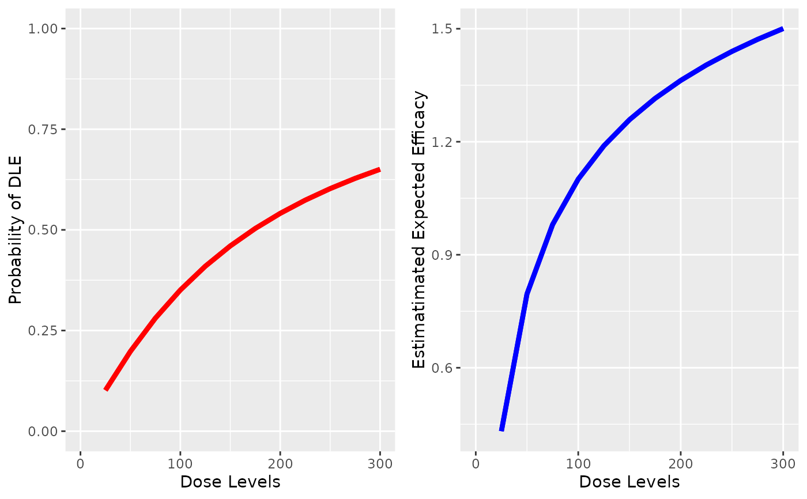

Plot of the DLE and efficacy curve side by side given a DLE pseudo model, a DLE sample, an efficacy pseudo model and a given efficacy sample
Source:R/Samples-methods.R
plotDualResponses.RdPlot of the DLE and efficacy curve side by side given a DLE pseudo model, a DLE sample, an efficacy pseudo model and a given efficacy sample
Plot of the dose-DLE and dose-efficacy curve side by side given a DLE pseudo model and a given pseudo efficacy model without DLE and efficacy samples
Usage
plotDualResponses(DLEmodel, DLEsamples, Effmodel, Effsamples, data, ...)
# S4 method for ModelTox,Samples,ModelEff,Samples
plotDualResponses(
DLEmodel,
DLEsamples,
Effmodel,
Effsamples,
data,
extrapolate = TRUE,
showLegend = FALSE,
...
)
# S4 method for ModelTox,missing,ModelEff,missing
plotDualResponses(DLEmodel, DLEsamples, Effmodel, Effsamples, data, ...)Arguments
- DLEmodel
the pseudo DLE model of
ModelToxclass object- DLEsamples
the DLE samples of
Samplesclass object- Effmodel
the pseudo efficacy model of
ModelEffclass object- Effsamples
the Efficacy samples of
Samplesclass object- data
the data input of
DataDualclass object- ...
additional arguments for the parent method
plot,Samples,GeneralModel-method- extrapolate
should the biomarker fit be extrapolated to the whole dose grid? (default)
- showLegend
should the legend be shown? (not default)
Functions
plotDualResponses( DLEmodel = ModelTox, DLEsamples = Samples, Effmodel = ModelEff, Effsamples = Samples ): function still to be documentedplotDualResponses( DLEmodel = ModelTox, DLEsamples = missing, Effmodel = ModelEff, Effsamples = missing ): Plot the DLE and efficacy curve side by side given a DLE model and an efficacy model without any samples
Examples
# nolint start
## we need a data object with doses >= 1:
data <-DataDual(x=c(25,50,25,50,75,300,250,150),
y=c(0,0,0,0,0,1,1,0),
w=c(0.31,0.42,0.59,0.45,0.6,0.7,0.6,0.52),
doseGrid=seq(25,300,25),
placebo=FALSE)
#> Used default patient IDs!
#> Used best guess cohort indices!
##plot the dose-DLE and dose-efficacy curves in two plots with DLE and efficacy samples
##define the DLE model which must be of 'ModelTox' class
##(e.g 'LogisticIndepBeta' class model)
DLEmodel<-LogisticIndepBeta(binDLE=c(1.05,1.8),DLEweights=c(3,3),DLEdose=c(25,300),data=data)
## define the efficacy model which must be of 'ModelEff' class
## (e.g 'Effloglog' class)
Effmodel<-Effloglog(eff=c(1.223,2.513),eff_dose=c(25,300),nu=c(a=1,b=0.025),data=data)
##define the DLE sample of 'Samples' class
##set up the same data set in class 'Data' for MCMC sampling for DLE
data1 <- Data(x=data@x,y=data@y,doseGrid=data@doseGrid)
#> Used default patient IDs!
#> Used best guess cohort indices!
##Specify the options for MCMC
options <- McmcOptions(burnin=100,step=2,samples=1000)
DLEsamples <- mcmc(data=data1,model=DLEmodel,options=options)
##define the efficacy sample of 'Samples' class
Effsamples <- mcmc(data=data,model=Effmodel,options=options)
##plot the dose-DLE and dose-efficacy curves with two plot side by side.
##For each curve the 95% credibility interval of the two samples are alos given
plotDualResponses(DLEmodel=DLEmodel,DLEsamples=DLEsamples,
Effmodel=Effmodel,Effsamples=Effsamples,
data=data)
# nolint end
# nolint start
## we need a data object with doses >= 1:
data <-DataDual(x=c(25,50,25,50,75,300,250,150),
y=c(0,0,0,0,0,1,1,0),
w=c(0.31,0.42,0.59,0.45,0.6,0.7,0.6,0.52),
doseGrid=seq(25,300,25),
placebo=FALSE)
#> Used default patient IDs!
#> Used best guess cohort indices!
##plot the dose-DLE and dose-efficacy curves in two plots without DLE and efficacy samples
##define the DLE model which must be of 'ModelTox' class
##(e.g 'LogisticIndepBeta' class model)
DLEmodel<-LogisticIndepBeta(binDLE=c(1.05,1.8),DLEweights=c(3,3),DLEdose=c(25,300),data=data)
## define the efficacy model which must be of 'ModelEff' class
## (e.g 'Effloglog' class)
Effmodel<-Effloglog(eff=c(1.223,2.513),eff_dose=c(25,300),nu=c(a=1,b=0.025),data=data)
##plot the dose-DLE and dose-efficacy curves with two plot side by side.
plotDualResponses(DLEmodel=DLEmodel,
Effmodel=Effmodel,
data=data)

# nolint end